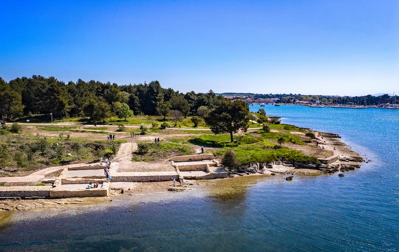
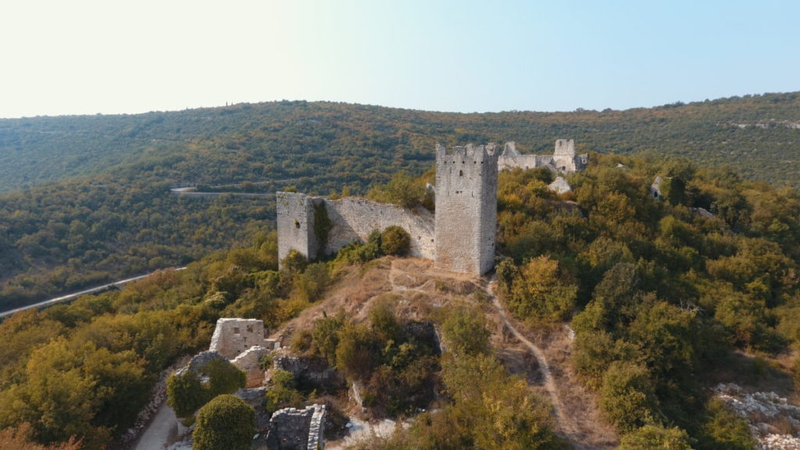

Local Attractions
Premantura sits just 14 km from Pula, one of Croatia's richest cities for history and culture. Below is a guide to the best things to see and do in the region, from 2,000-year-old Roman monuments to wild nature parks and world-class film festivals.
Roman Pula & Historic Sites

Pulska arena (amfiteatar)
One of the six largest Roman amphitheatres in the world and the best preserved in Croatia. Built in the 1st century AD, it seats 23,000 and today hosts the Pula Film Festival and major concerts. A must-see.
Pula city centre · ~20 min by car
View on map
Forum
The central square of Roman Pula, continuously used for 2,000 years. Flanked by the Temple of Augustus and the Town Hall, it's the beating heart of the old city.
View on map
Augustov hram
A remarkably intact Roman temple from the 1st century BC dedicated to the goddess Roma and Emperor Augustus. Located on the Forum.
View on map
Slavoluk Sergijevaca - Zlatna vrata
The Arch of the Sergii ("Golden Gate"), a triumphal arch from 29-27 BC at the entrance to the old town. One of the oldest and best preserved Roman arches in the world.
View on mapHerkulova vrata
Hercules' Gate, the oldest Roman monument in Pula, dating from the 1st century BC. A single-arched gate with a carved head of Hercules above the arch.
View on mapKaštel (Mletačka utvrda)
The Venetian Fortress built in the 17th century on the site of the original Roman Capitol, offering panoramic views over Pula and the harbour. Houses the Historical Museum of Istria.
View on mapKrstionica Sv. Trojstva
Baptistery of the Holy Trinity, an early Christian rotunda from the 6th century, one of the finest examples of early Byzantine architecture in Istria.
View on mapGradski bedemi i vrata
The Roman and medieval city walls and gates of Pula, encircling the old town. Several towers and gate passages survive and can be walked along.
View on mapNature & Outdoors

Otočje Brijuni Nacionalni park
The Brijuni Islands National Park, an archipelago of 14 islands with Roman ruins, a safari park with exotic animals, pristine beaches, and Tito's famous summer residence. Reached by ferry from Fažana.
View on map
Vižula
A scenic peninsula near Medulin with an archaeological park revealing remains of a Roman villa rustica and early Christian basilica, surrounded by walking paths and sea views.
View on map
Park šuma „Zlatni Rt"
Golden Cape Forest Park in Rovinj, a beloved coastal forest park with walking and cycling paths through pine and cypress trees, ending at beautiful rocky coves on the Adriatic.
View on mapMočvara Palud
Palud Marsh, an ornithological reserve near Rovinj, one of the most important wetland habitats in Croatia. Home to rare birds, dragonflies, and diverse flora. A hidden gem for nature lovers.
View on mapOtoci Dvije Sestrice
The Two Sisters islands, a pair of small uninhabited islands off the coast near Premantura. A popular destination for boat trips, snorkelling, and peaceful swimming in clear waters.
View on mapHidden Gems

Kamenolom Fantazija
Fantazija Quarry, a dramatic abandoned limestone quarry that has become a unique natural attraction with turquoise water, sheer rock walls, and a surreal landscape perfect for photos and swimming.
View on map
Dvigrad
A remarkably preserved medieval ghost town in central Istria, abandoned in the 17th century. Its towers, walls, and church ruins rise from the forest, one of the most atmospheric sites in Istria.
View on mapDvorac na otoku Sv. Andrije
A romantic ruined castle on St. Andrew's Island, accessible only by boat. The overgrown fortress offers a mystical atmosphere and beautiful views of the surrounding sea and coastline.
View on mapEvents & Culture
Pula Film Festival
Croatia's oldest and most prestigious film festival, held every July inside the Pula Arena. Watching a film under the stars in a 2,000-year-old amphitheatre is an unforgettable experience.
View venue on mapPulska noć - ulicama našeg grada
Pula Night, a popular summer evening event when the old town streets fill with music, performers, food stalls, and culture. A vibrant celebration of the city's heritage.
View area on mapIstra gourmet
A celebration of Istrian cuisine, truffles, olive oil, wine, seafood, and local delicacies. Seasonal markets and restaurant events let you taste the best of the Istrian peninsula.
View area on mapIstrian Hand Made
A craft fair dedicated to local artisans and handmade products from across Istria, jewellery, ceramics, textiles, food products, and traditional crafts. A great place to find authentic souvenirs.
View area on map